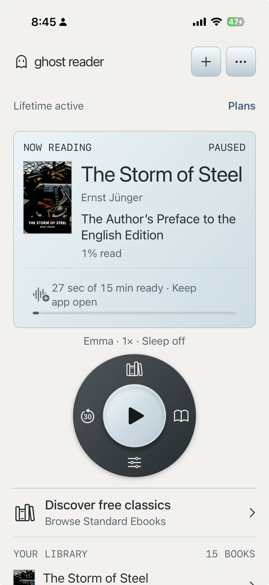
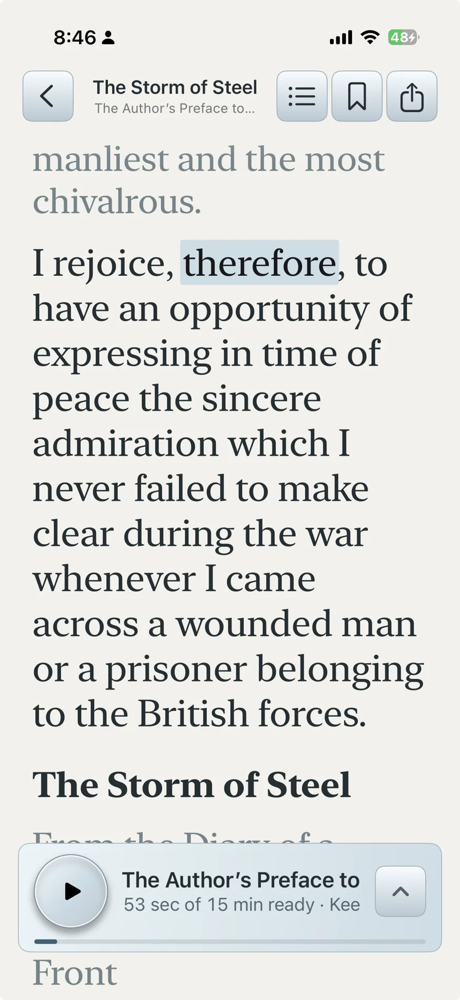
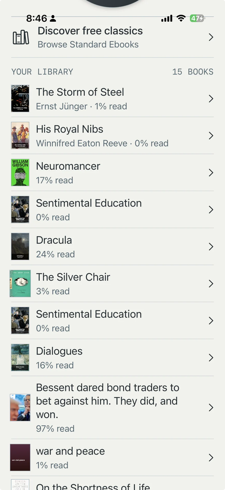

Ghost Reader Live
Your books.
Out loud.
Listen to books and documents with natural voices. Follow the words, find your place, and make time for another chapter.
For iPhone and iPad
Get Ghost Reader
Listen. Read along.
See the spoken word highlighted as you listen. Keep the text close, or let the narration carry you through your book.
The compact player keeps playback controls within reach while you read.

Your next chapter.
Keep imported books and documents together in your library. Browse classics from Standard Ebooks when you’re ready for something new.
Import PDFs, EPUBs, web articles, Markdown and plain text.

Start listening.
Try 30 minutes of narration each day. Monthly and Lifetime options unlock full access; see the app for current plans and local pricing.
Speech is generated on your device. Web imports, ebook discovery and App Store purchases use an internet connection.
Get Ghost ReaderGood to know.
Can I listen offline?
Narration runs on your device. Import your content first; online discovery and web imports require a connection.
Where can I get help?
Email support@bighippolabs.com. You can also read our privacy policy and terms of use.